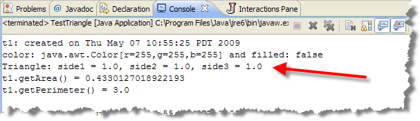

This week you'll complete some homework assignments working with arrays and ArrayLists. Some of these will be JavaBat assignments. You'll also complete an assignment working with inheritance.
-
Homework 32 (Inheritance):
Download the class
GeometricObject and extend it to create a new
class named
Triangle. TheTriangleclass contains:- an array of three
doublevalues, representing side1, side2, and side3. You must use an array; do not use individual instance variables. Each element should have default values of1.0to represent the three sides of the triangle. - a no-arg constructor that creates a default
Triangle - a constructor that creates a
Trianglewith the three sides specified - a third constructor that takes the three sides, the
Colorand whether or not the object should be filled. - A method named
getArea()that returns the area of theTriangle. (Look up the formula online.) - A method named
getPerimeter(). - A method named
toString()that returns aStringdescription of the Triangle. Here's what the description should look like for the defaultTriangle:

Note that theTriangleclass will only supply the portion that begins with the wordTriangle. Use the inheritedtoString()method to generate the first portion of the returned value.
You can download a simple test file TestTriangle.java that creates three
Triangleobjects and then calls some methods. The expected output is contained inside the test program.Submit only Triangle.java to Web-CAT, using the Web interface. Do not submit GeometricObject. I'll use my own version of the class (to make sure you don't make any changes.)
This assignment will be graded on a combination of the tests that I've designed (called the reference tests), and 10% on style. The Web-Cat scoring is set to 50 points, which will be scaled down to 5 points.
(Solution video. 20 min.)
- an array of three
-
Homework 33 (More Arrays and ArrayLists):
Let’s finish up our unit on arrays with some more complex array
problems from the AP1 section of http://www.javabat.com.
In these problems you'll work with parallel arrays, ArrayLists and
partial array processing.
One note: in the wordsWithoutList problem, you'll notice that the return type of the method is type List. List is the interface type of the ArrayList class. Make your return variable of type ArrayList<String>, just like we did in class.
- Complete reading Chapters 7, 8 and 9 in your textbook. Take the Unit 11 quiz as well.
Remember that all of these assignments are due before the deadline, so make sure you don't get "caught short".